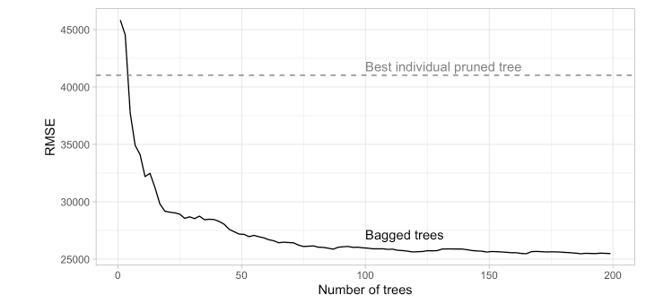
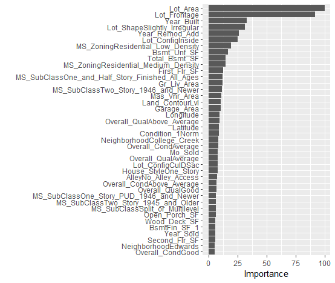
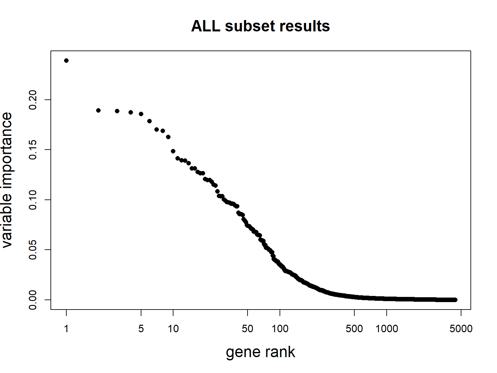
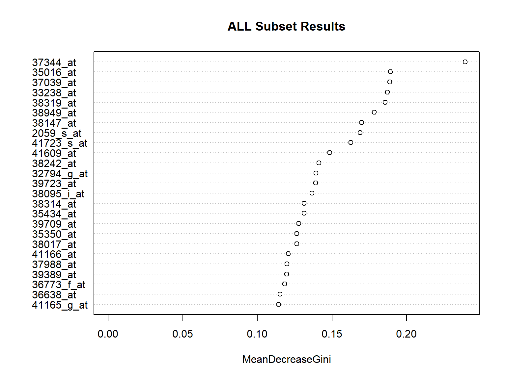
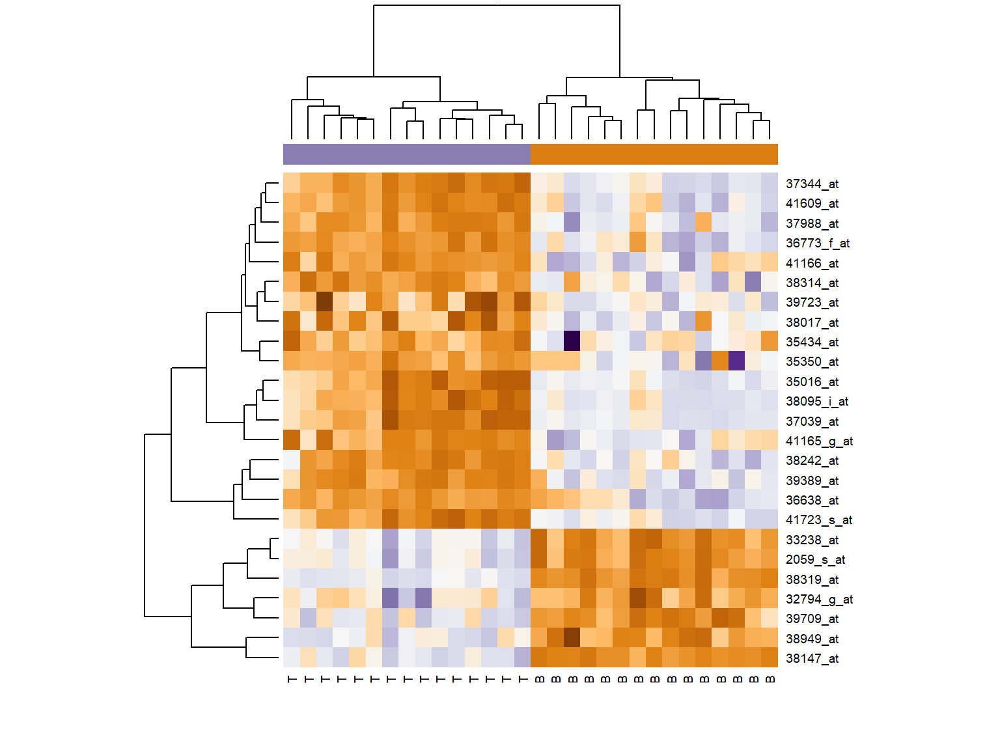

# Helper packages
library(dplyr) # for data wrangling
library(ggplot2) # for awesome plotting
library(doParallel) # for parallel backend to foreach
library(foreach) # for parallel processing with for loops
# Modeling packages
library(caret) # for general model fitting
library(rpart) # for fitting decision trees
library(ipred) # for fitting bagged decision treesDecision Trees Lab 2: Ensembles
Bagging trees
The first example is adapted from (Boehmke and Greenwell 2020), also available online.
This example relies on the AmesHousing dataset on house prices in Ames, IA.
if(!require(AmesHousing))
install.packages("AmesHousing", dep=TRUE)
ames <- AmesHousing::make_ames()if(!require(rsample))
install.packages("rsample", dep=TRUE)
# Stratified sampling with the rsample package
set.seed(123)
split <- rsample::initial_split(ames, prop = 0.7,
strata = "Sale_Price")
ames_train <- rsample::training(split)
ames_test <- rsample::testing(split)Building a decision trees to predict the sales price for the Ames housing data yields a poor performance classifier/predictor that is beaten by alternatives such as MARS or KNN (check it!)
In this example, rather than use a single pruned decision tree, we can use, say, 100 bagged unpruned trees (by not pruning the trees we’re keeping bias low and variance high which is when bagging will have the biggest effect).
As the below code chunk illustrates, we gain significant improvement over our individual (pruned) decision tree (RMSE of 26,462 for bagged trees vs. 41,019 for the single decision tree).
The bagging() function comes from the ipred package and we use nbagg to control how many iterations to include in the bagged model and coob=TRUE indicates to use the OOB error rate.
- By default, bagging() uses rpart::rpart() for decision tree base learners but other base learners are available.
- Since bagging just aggregates a base learner, we can tune the base learner parameters as normal.
- Here, we pass parameters to rpart() with the control parameter and we build deep trees (no pruning) that require just two observations in a node to split.
# make bootstrapping reproducible
set.seed(123)
# train bagged model
system.time(
ames_bag1 <- bagging(
formula = Sale_Price ~ .,
data = ames_train,
nbagg = 100,
coob = TRUE,
control = rpart.control(minsplit = 2, cp = 0)
)
) user system elapsed
38.76 0.25 39.21 Bagging, as most ensemble procedures, can be time consuming. See Boehmke and Greenwell (2020) for an example on how to easily parallelize code, and save time.
show(ames_bag1)
Bagging regression trees with 100 bootstrap replications
Call: bagging.data.frame(formula = Sale_Price ~ ., data = ames_train,
nbagg = 100, coob = TRUE, control = rpart.control(minsplit = 2,
cp = 0))
Out-of-bag estimate of root mean squared error: 26216.47 Bagging tends to improve quickly as the number of resampled trees increases, and then it reaches a platform.
The figure below has been produced iterated the computation above over nbagg values of 1–200 and applied the bagging() function.

Variable importance
Due to the bagging process, models that are normally perceived as interpretable are no longer so.
However, we can still make inferences about how features are influencing our model using feature importance measures based on the sum of the reduction in the loss function (e.g., SSE) attributed to each variable at each split in a given tree.
pred.imp <- varImp(ames_bag1)
pred.imp$Overall<- pred.imp$Overall/sum(pred.imp$Overall)*100
varImpt <- pred.imp %>% arrange (desc(Overall)) %>%
slice(1:40)
head(varImpt, n=10) Overall
Lot_Area 11.590497
Lot_Frontage 10.196220
Neighborhood 6.635439
MS_SubClass 6.183734
Year_Built 4.791913
Lot_Shape 4.220695
Lot_Config 4.172808
Year_Remod_Add 3.653528
Overall_Cond 2.723227
Bsmt_Unf_SF 2.521168barplot(varImpt$Overall,
names.arg=row.names(varImpt), cex.names=0.1,
horiz = TRUE)
Alternatively if the tree is built with caret the vip function from package vip can be used.
system.time(
ames_bag2 <- train(
Sale_Price ~ .,
data = ames_train,
method = "treebag",
trControl = trainControl(method = "oob"),
nbagg = 100,
keepX=TRUE,
control = rpart.control(minsplit = 2, cp = 0)
)
)
vip::vip(ames_bag2, num_features = 40)knitr::include_graphics("images/ames2VIP.png")
Random forests for gene expression data
Random forest have been particularly successful in Bioinformatics where high dimensional data are common.
One common application has been the use of RF to derive cancer-related classifiers based on gene expression data.
Gene expression data are high dimensional tabular datasets where for each inividual the expression of a high number of genes has been measured
The example uses “RMA-preprocessed gene expression data” obtained by (Chiaretti et al. 2004). Briefly they consist of:
- 12625 genes (hgu95av2 Affymetrix GeneChip)
- 128 samples (arrays)
- phenotypic data on all 128 patients, including:
- 95 B-cell cancer
- 33 T-cell cancer
A standard bioinformatic preprocessing has been applied.
if(!require(affy)) BiocManager::install("affy")
if(!require(genefilter)) BiocManager::install("genefilter")
if(!require(ALL)) BiocManager::install("ALL")
library(affy)
library(ALL)
data(ALL)Preprocessing is applied to obtain relevant subset of data Also, keep 30 arrays here JUST for computational convenience #
library(genefilter);
e.mat <- 2^(exprs(ALL)[,c(81:110)])
ffun <- filterfun(pOverA(0.20,100))
t.fil <- genefilter(e.mat,ffun)
small.eset <- log2(e.mat[t.fil,])
group <- c(rep('B',15),rep('T',15))
dim(small.eset) [1] 4400 30colnames(small.eset) [1] "43012" "48001" "49006" "57001" "62001" "62002" "62003" "63001" "64001"
[10] "64002" "65005" "68001" "68003" "84004" "LAL5" "01003" "01007" "02020"
[19] "04018" "09002" "10005" "11002" "12008" "15006" "16002" "16007" "17003"
[28] "18001" "19002" "19008"pData(ALL)[81:110,1:5] # column "BT" defines groups cod diagnosis sex age BT
43012 43012 1/15/1999 M 18 B4
48001 48001 3/22/1997 M 19 B2
49006 49006 8/12/1998 F 43 B2
57001 57001 1/29/1997 F 53 B3
62001 62001 11/11/1997 F 50 B4
62002 62002 1/15/1998 M 54 B4
62003 62003 12/4/1998 M 53 B4
63001 63001 7/8/1997 M 49 B1
64001 64001 8/28/1997 M 20 B2
64002 64002 10/21/1997 F 26 B2
65005 65005 7/20/1999 M 22 B2
68001 68001 5/15/1997 M 36 B1
68003 68003 4/11/2000 F 27 B2
84004 84004 9/25/1998 M 50 B
LAL5 LAL5 <NA> <NA> NA B
01003 1003 2/18/1997 M 31 T
01007 1007 9/30/1998 F 16 T3
02020 2020 3/23/2000 F 48 T2
04018 4018 3/24/2000 M 17 T2
09002 9002 5/14/1998 F 40 T3
10005 10005 9/30/1997 M 22 T2
11002 11002 12/23/1996 M 30 T
12008 12008 3/22/1997 M 18 T4
15006 15006 6/10/1998 M 22 T2
16002 16002 4/10/1997 M 50 T3
16007 16007 11/1/1998 M 41 T3
17003 17003 4/8/1997 F 40 T
18001 18001 4/23/1997 F 28 T2
19002 19002 1/29/1997 M 25 T3
19008 19008 4/29/1998 F 16 T2We use the randomForest library to build an “out-of-the box” classifier.
if (!require(randomForest)) install.packages("randomForest", dep=TRUE)
library(randomForest)
set.seed(1234)
system.time(
rf <- randomForest(x=t(small.eset),
y=as.factor(group),
ntree=10000)
) user system elapsed
12.12 0.00 12.16 Inspect the results
rf
Call:
randomForest(x = t(small.eset), y = as.factor(group), ntree = 10000)
Type of random forest: classification
Number of trees: 10000
No. of variables tried at each split: 66
OOB estimate of error rate: 0%
Confusion matrix:
B T class.error
B 15 0 0
T 0 15 0Now look at variable importance:
imp.temp <- abs(rf$importance[,])
t <- order(imp.temp,decreasing=TRUE)
plot(c(1:nrow(small.eset)),imp.temp[t],log='x',cex.main=1.5, xlab='gene rank',ylab='variable importance',cex.lab=1.5, pch=16,main='ALL subset results') 
Or, a better plot:
varImpPlot(rf, n.var=25, main='ALL Subset Results') 
We can focus on the 25 most important genes
gn.imp <- names(imp.temp)[t]
gn.25 <- gn.imp[1:25]
# vector of top 25 genes, in orderWe use the Bioinformatics Bioconductor libraries to find out more about these these genes. Information on how to do it can be found at https://aspteaching.github.io/An-Introduction-to-Pathway-Analysis-with-R-and-Bioconductor/.
if(!require(hgu95av2.db)) BiocManager::install("hgu95av2.db")
if(!require(AnnotationDbi)) BiocManager::install("AnnotationDbi")
library(hgu95av2.db)
geneAnots <- AnnotationDbi::select(hgu95av2.db, gn.25,
c("SYMBOL", "GENENAME"))
head(geneAnots, n=25) PROBEID SYMBOL
1 37344_at HLA-DMA
2 35016_at CD74
3 37039_at HLA-DRA
4 33238_at LCK
5 38319_at CD3D
6 38949_at PRKCQ
7 38147_at SH2D1A
8 2059_s_at LCK
9 41723_s_at HLA-DRB5
10 41723_s_at HLA-DRB1
11 41723_s_at HLA-DRB3
12 41723_s_at HLA-DRB4
13 41723_s_at HLA-DRB6
14 41609_at HLA-DMB
15 38242_at BLNK
16 32794_g_at TRBV19
17 32794_g_at TRBV7-2
18 32794_g_at TRBV6-5
19 32794_g_at TRBV5-4
20 32794_g_at TRBV3-1
21 32794_g_at TRBC2
22 32794_g_at TRBC1
23 39723_at CUL1
24 38095_i_at HLA-DPB1
25 38314_at CIC
GENENAME
1 major histocompatibility complex, class II, DM alpha
2 CD74 molecule
3 major histocompatibility complex, class II, DR alpha
4 LCK proto-oncogene, Src family tyrosine kinase
5 CD3 delta subunit of T-cell receptor complex
6 protein kinase C theta
7 SH2 domain containing 1A
8 LCK proto-oncogene, Src family tyrosine kinase
9 major histocompatibility complex, class II, DR beta 5
10 major histocompatibility complex, class II, DR beta 1
11 major histocompatibility complex, class II, DR beta 3
12 major histocompatibility complex, class II, DR beta 4
13 major histocompatibility complex, class II, DR beta 6 (pseudogene)
14 major histocompatibility complex, class II, DM beta
15 B cell linker
16 T cell receptor beta variable 19
17 T cell receptor beta variable 7-2
18 T cell receptor beta variable 6-5
19 T cell receptor beta variable 5-4
20 T cell receptor beta variable 3-1
21 T cell receptor beta constant 2
22 T cell receptor beta constant 1
23 cullin 1
24 major histocompatibility complex, class II, DP beta 1
25 capicua transcriptional repressorTo end the exploration we plot heatmap that shows how the two groups differ in gene expression.
t <- is.element(rownames(small.eset),gn.25)
sig.eset <- small.eset[t,]
# matrix of expression values, not necessarily in order
library(RColorBrewer)
hmcol <- colorRampPalette(brewer.pal(11,"PuOr"))(256)
colnames(sig.eset) <- group
# This will label the heatmap columns
csc <- rep(hmcol[50],30)
csc[group=='T'] <- hmcol[200]
# column side color will be purple for T and orange for B
heatmap(sig.eset,scale="row", col=hmcol,ColSideColors=csc) 
References
Boehmke, Bradley, and Brandon Greenwell. 2020. The r Series Hands-on Machine Learning with r. CRC Press. https://www.routledge.com/Hands-On-Machine-Learning-with-R/Boehmke-Greenwell/p/book/9781138495685.
Chiaretti, Sabina, Xiaochun Li, Robert Gentleman, Antonella Vitale, Marco Vignetti, Franco Mandelli, Jerome Ritz, and Robin Foa. 2004. “Gene expression profile of adult T-cell acute lymphocytic leukemia identifies distinct subsets of patients with different response to therapy and survival.” Blood 103 (7): 2771–78. https://doi.org/10.1182/blood-2003-09-3243.